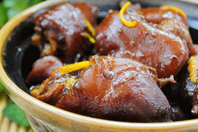

最近春困人乏，犯懒了不少，干什么都没精打采，别说做美食了，连相机都不想拿了，这可不行啊，再不做美食，大家恐怕都要把我给忘掉了。我也得勤奋一把，争取给大家做几道漂亮滴菜菜，好让各位把我牢牢滴记在心间。

主料：猪蹄2只
辅料：大葱段4段 八角3个 桂皮2根 花椒20个 干辣椒3个 生抽20ml 老抽30ml 豆瓣酱2勺 冰糖5个 盐少许 鸡精少许 橙子皮1/2个 料酒30ml 开水适量
橙香酱猪蹄的做法步骤
1.猪蹄斩块、洗净，凉水下锅。
2.倒入15ml料酒，焯水。
3.将焯好水的猪蹄捞出，橙子皮切丝，准备好所有原料。
4.炒锅洗净，重新置于火上，倒入适量油，用中小火加至七成热。
5.倒入八角、桂皮、花椒、干辣椒炒出香味。
6.放入大葱段炒香。
7.倒入焯好水的猪蹄，翻炒均匀。
8.倒入冰糖，再沿着锅边淋入15ml料酒，炒匀。
9.倒入生抽。
10.倒入老抽，炒匀。
11.倒入开水（水量将没过猪蹄为宜），转大火，开锅之后放入豆瓣酱，翻炒均匀后转小火炖一个半小时。
12.放入橙子皮丝、盐、鸡精，翻炒至橙皮刚刚变软即可出锅。
小贴士
1、橙子皮也可用陈皮来代替。
2、炖肉的时候一定要加热水。